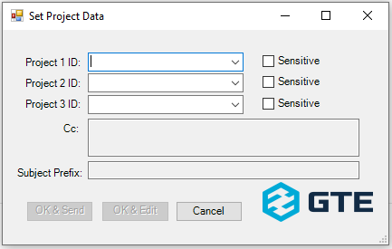
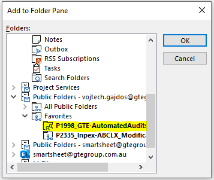
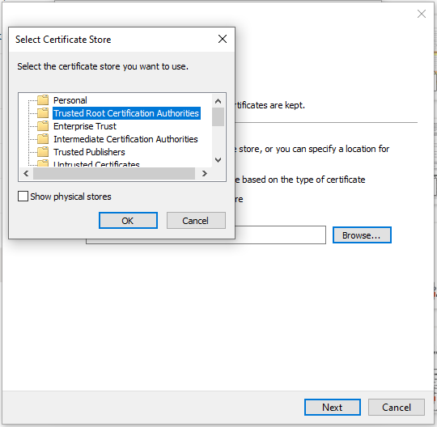

Project Public Folders (PPF)#
GTE has adopted a set of rules around storing and handling project-related email correspondence:
Abstract
- There are two MS Exchange public folders (referred to as Project Public Folders – PPFs in the following text) configured automatically for each project:
- PPF for General Correspondence (accessible by everyone)
- PPF for Sensitive Correspondence (accessible by managers only)
- PPFs are located in the main “All Public Folders” folder and - depending on the project status - assigned into one of the following groups:
- Projects General Correspondence
- Projects Sensitive Correspondence
- Projects Archive - General
- Projects Archive - Sensitive
- Each PPF has a configured email address obeying the following format:
- General correspondence -
PxxxxG@gtegroup.com.au - Sensitive correspondence -
PxxxxS@gtegroup.com.au
- General correspondence -
- ALL project related emails (internal/external, in/outgoing) will be stored in its respective PPF. This is achieved by Cc-ing each email to the respective PPF email address. By doing so, all replies (internal/external) will be automatically delivered to the PPF.
- ALL project-related emails (internal/external, in/outgoing) will contain the project code in the "[Pxxxx]" format in their
Subjectfield, for example:
- Any email received from an external sender, which has not been Cc'd to PPF (typically communication thread initiated by the customer) must be manually moved/copied to the PPF by email's principal recipient.
- To achieve that all project-related correspondence is Cc's to a PPF, a purpose-built program GTE Outlook Addin has been developed and is installed on each GTE PC. The details of this addin are contained further in this document.
- PPF is moved to respective Archive folder after the project has been completed and closed out:
- General PPF ->
Projects Archive - Generalfolder - Sensitive PPF ->
Projects Archive - Sensitivefolder
- General PPF ->
Note
To easily distinguish between General and Sensitive PPF, '-S' is appended to the project ID in the name of the Sensitive PPF. For example:
P2288_S_BHP-BHP_NPI_HV_SCADA_Upgrade (Sensitive PPF) as opposed to P2288_BHP-BHP_NPI_HV_SCADA_Upgrade (General PPF)
Access to PPF#
PPF's are accessible via MS Outlook, through following these steps:
-
In the left Navigation Pane, select 'Folders':

-
In the Folder Pane, look up item 'Public Folders - <your email address>'

-
Enter the 'Public Folders' item, there are two subfolders - 'All Public Folders' and 'Favorites'.
- Enter the 'All Public Folders' item, there are four PPF groups as described above.
For further information about how to set up a quick access to frequently used PPF's, see section Recommended Outlook Configuration
GTE Outlook Addin#
The GTE Outlook Addin (referred to as 'Addin' in the following text) is a software component, which helps with the process of storing all project related email correspondence into a PPF.
Addin Installation#
The Addin is installed automatically by GTE IT administrator, however it can also be installed manually if required. The installation program is located at the following path: \\gte-fs-01\Offline Resources\08_Software\GTE_Group\GTE Outlook Addin\ and consists of the following set of folders/files (when downloading the installation files, make sure all from below have been downloaded, including the 'Application Files' folder):
Note
Prior to running the installation, we recommend to check if Public Folders are appearing in your Outlook (see below section Recommneded Outlook Configuration). If you do not see the Public Folders in the Folder Pane, follow the instructions in the "Known Issues" section, this item.
To begin the installation of the Addin, follow the steps below:
- Exit Outlook
- Run
setup.exe -
When the dialog box below appears, click
Install:
Note
If you get error message at this point, try to follow the instructions in the "Known Issues" section, this item.
-
The installation program will run and execute all necessary steps to install the Addin. Successful installation is confirmed by the following message:

- Click
Close, the installation is now complete. To confirm that the Addin was successfully installed and is now active, run Outlook and selectFile > Options > Add-ins. You should see the 'GTE Outlook Addin' on the top of the 'Add-ins' list:
Addin Operation#
The main purpose of the GTE Outlook Addin is to make sure that all the outgoing project-related emails will contain the project code in their Subject as well as the PPF email address (General or Sensitive) in their Cc.
The GTE Outlook Addin is loaded automatically upon Outlook start-up. Its function is to check each email before sending and making sure the Cc and Subject fields are properly set up.
After clicking the Send button when sending an email (new, reply or forward), the add-in searches the email Subject field for the project code in the [Pxxxx] (or [pxxxx]) format. If the project code is not found, it displays the following pop-up message:

Select one of the following options:
Yes - Edit: a dialog box for defining a PPF will be displayed
No - Send: email is sent without any changes to Subject/Cc
Cancel: go back to the email-composing window
When Yes - Edit button is selected, the following dialog box is displayed:

In any of the Project 1 ID:, Project 2 ID: and Project 3 ID: fields, either select a required 4-digit Project ID from the dropdown list (any relevant IDs found in the subject or body of the email are included), or enter a 4-digit Project ID into the text line(s). The Cc and Subject Prefix fields will be updated automatically. Tick the respective checkbox Sensitive as/if required. The Cc and Subject Prefix fields will indicate the actual contents of these email fields that will be used once the email is sent:

After entering the correct project ID(s), click on one of the following buttons:
OK & Send: send the email out with the Subject and Cc fields being modified accordingly
OK & Edit: go back to the email composing window with the Subject and Cc fields modified accordingly
Cancel: go back to the email composing window without any changes made to the Subject or Cc fields
Note
When new email is being sent out, after a user hits Send button, the Addin checks if Subject line starts with project ID (with or without 'P' / 'p' prefix). If project ID is found, the Addin adds the corresponding PPF email address to the Cc field and changes project code on the Subject line to the proper format ([Pxxxx]), then sends the email without further questioning.
In effect, it is possible to quickly add a project 4-digit ID to the Subject line (for example: 2469 Test email) and thus preclude Addin from displaying any popup window, but adding a correct PPF email address (P2469G@gtegroup.com.au in this example) straight away. The Subject line in the case of this example will be automatically changed to [P2469] Test email.
When replying to/forwarding an earlier received email, after commiting to send a composed reply/forward by hitting Send button, the following pop-up message is ALWAYS displayed:

This message provides a summary information with the list of PPF(s) to which the copy of the email will be sent. One of the following options can be selected:
Yes - Edit: the list of PPFs can be edited - the same dialog as when sending a new email is displayed and can be used for editing the PPF information
No - Send: the list of Cc'd projects is not changed, the email is sent as is, without any further changes
Cancel: go back to the email composing window
Note
If project ID in the email Subject contains lower letter 'p', addin automatically changes it to the upper case letter 'P'
Recommended Outlook Configuration#
To quickly access the frequently used PPF(s), these steps are to be followed in MS Outlook:
Configure Position of 'Folders' Item#
Project public folders are accessible via the 'Folders' icon on an Outlook Navigation Pane (the leftmost vertical bar in the Outlook Window):
The 'Folders' icon can be moved to any required position on the Navigation Pane:
- Right-click on the 'Folders' icon and select 'Pin' (if not pinned already)
- By selecting 'Move Up' and 'Move Down' items from the right-click menu, move the icon to the required position in the Navigation Bar
PPF Accessible Offline#
Alternatively, configure the PPF to be accessible offline (i.e., when PC is not connected to the Internet):
- Select your account in the
File > Account Settings:

- Click
Change…. - Click
More Settings. - Go to the 'Advanced' tab.
- Tick the
Download Public Folder Favoritescheckbox:
- Click
OK. Outlook will need to be re-started afterwards.
By doing this, any PPF that is added to the Favorites folder will be available offline.
Add PPF To 'Favorites' Folder#
To add a PPF to Favorites folder, follow the steps below:
- Right-click on the PPF.
- From the pop-up menu, select 'Add to Favorites…'.
- Click
Addbutton:

The PPF then appears under the 'Favorites' folder:

Create Shorcuts To Frequently Accessed PPF#
-
Click on
Shortcutsin the left Navigation Pane (the position of this icon can be moved as explained earlier in this section):
The Folder Pane shows the default
Shortcutsstructure: -
The default shortcuts are normally not required, they can be removed (by right-clicking and selecting 'Delete Shortcut')
- Right-click the
Shortcutsitem and select 'New Shortcut' -
In the displayed folder hierarchy, select the corresponding PPF (it is recommended that the version from
Favoritesis selected so that shortcuts refer to the offline version if needed):
-
Click
OK. The shortcut to the PPF is added to the Folder Pane:
By clicking on the shortcut, the whole contents of the PPF is displayed in the Main Pane.
Known Issues#
Public Folders Not Visible (Lost From Folder Pane)#
The workaround is to apply a configuration change in the registry. This change should be applied on each GTE PC automatically via a GPO (Group Policy) but if you experience this issue it is worth checking if the registry is correctly set:
- Open the Registry Editor (regedit).
- Navigate to the 'Current User/Software/Microsoft/Office/16.0/Outlook'.
- There should be a 'AutoDiscover' key, if it's not - create one.
- Under the 'AutoDiscover' key, there should be a 'ExcludeLastKnownGoodURL' value, if not create it:
a. DWORD (32-bit)
b. Value = 1 - Restart Outlook.
Note
If you experience disappearing of Public Folders even when the registry is set as described, just try to restart Outlook, the Public Folders should re-appear (this sometimes can happen when moving PC between in/out-of-office locations).
Issue With Installation - Certificate Not Trusted#
While installing the add-in, in certain cases the digital certificate is not recognized as trusted and therefore the installation is aborted with the following error:
If this happens, please follow the instructions contained in this video.
In short, the following is to be done prior to Addin installation:
- In the Addin installation folder, locate
new-gte-outlook-addin-key.cer. - Download this file and double click on it.
- In the displayed "Certificate" window, click on "Install Certificate" button.
- In The Displayed "Certificate Import Wizard" window, leave "Current User".
- In the next window, select "Place all certificates in the following store" button.
-
Select "Trusted Root Certification Authorities" certificate store:

-
Click 'OK', then 'Next' and 'Finish'. The certificate gets installed.
Move Navigation Pane To Bottom Of Outlook Window#
If you prefer the Navigation Pane to rather be on the bottom of Outlook Window instead of current default position on the left, there is some modification required in the Key registry:
- Close Outlook
- Right click Start > Run > type Regedit
- Navigate to HKEY_CURRENT_USER > Software > Microsoft > Office > 16.0 > Common > ExperimentEcs > Overrides
- Create string value named Microsoft.Office.Outlook.Hub.HubBar (if this exists already, skip)
- Set value to
false - Restart Outlook